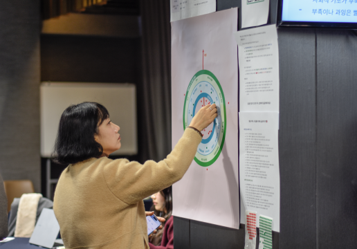

01
발간은 끝이 아니라 시작입니다
연구 결과가 시민의 언어로 번역되어 실제 삶과 정책을 바꿀 때까지 끝까지 책임집니다.
Institute for Green Transformation
기후위기 대응은 단순히 에너지를 아끼는 문제가 아닙니다. 우리가 사는 도시, 돌아가는 경제, 숨 쉬는 일상이 통째로 바뀌어야 합니다. 녹색전환연구소는 지식을 쌓는 데서 멈추지 않고, 정책과 내 삶을 이어 실제 세상을 움직이는 엔진이 됩니다.

우리가 마주한 질문
"나 혼자 애쓴다고 세상이 바뀔까?" 우리가 느끼는 무력감은 의지가 부족해서가 아닙니다.
애써도 바뀌지 않는 제도와 예산의 방향 때문입니다.
"지구를 지키고 싶은 나의 진심은 어디에서 멈추고 있나요?"
기후위기는 개인의 선의만으로는 해결될 수 없습니다. 국가 예산의 물줄기가 바뀌고,
우리 동네의 규칙이 새로 쓰여야 합니다. 당신의 실천이 멈추는 바로 그 지점에서,
녹색전환연구소의 정책 설계가 시작됩니다.

우리의 약속
01
연구 결과가 시민의 언어로 번역되어 실제 삶과 정책을 바꿀 때까지 끝까지 책임집니다.
02
기후위기 해결을 위해 시민들이 보내준 신뢰를 '사회적 용역'이라 여기며 책임감 있게 일합니다.
03
일상의 절실함을 데이터로 입증해, 정부와 국회가 움직일 수밖에 없는 가장 실무적인 해결책을 만듭니다.

증명된 변화
시민의 후원은 단순한 지원이 아니라, 정책 결정을 흔들 수 있는 독립성과 실천력의 기반이 됩니다.
0%
30대 기후정책 중 53%를 실제 국정과제에 반영시켰습니다.
국가 예산과 산업의 방향이 기후를 최우선으로 고려하도록 기준을 설계합니다.
시민의 목소리를 모아 예산을 바꾸고, 우리 동네가 지속될 수 있는 조례를 만듭니다.
개인의 실천이 사회적 기반이 되는 실질적인 경로를 다각도로 설계합니다.
중앙은행 기후 평가 기준을 세워 금융 시스템의 책임 기준을 강화했습니다.
기업이 녹색 전환을 피할 수 없는 의무로 받아들이도록 강력한 경제 정책을 제안합니다.

투명한 책임
정책 결정권자들이 거부할 수 없는 정교한 근거를 만듭니다. 현장의 목소리를 실제 변화로 이끄는 밑거름이 됩니다.
내 일상의 데이터가 정책으로 제안되는 과정을 경험하게 합니다. 시스템을 바꾸는 직접 참여의 장을 엽니다.
어려운 연구를 쉬운 언어로 가공하는 전문성을 유지합니다. 연구자들이 정책의 새로운 기준을 세우도록 지원합니다.
한국 사회 기후 의제의 표준을 세웁니다. 모든 의사결정에 기후 책임을 심는 미래 설계에 투자합니다.
정부나 기업의 지원금에 기대지 않고 시민의 후원으로만 움직여야 하는 이유는 분명합니다. 그래야만 어떤 압박에도 흔들리지 않고, 우리 공동체의 생존을 위해 필요한 소신 있는 대안을 끝까지 말할 수 있기 때문입니다. 지금 녹색전환연구소의 든든한 파트너가 되어주세요.